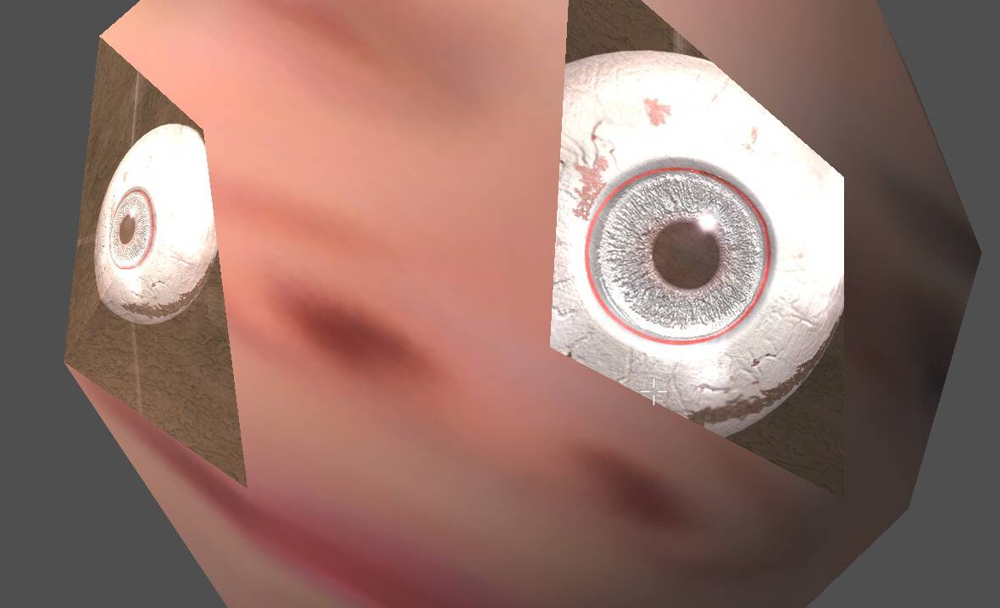
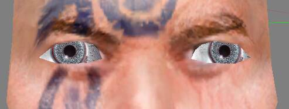

Texture projection and animation
Проецирование текстуры эффекта на какую-нибудь поверхность.
Собственно в
прочих разделах
об этом довольно сказано, но в качестве примечания выделим в отдельный раздел.
Берем прожектор FSpot - применяем к нему текстуру, например скриншот некой игровой локации.
И регулируя положения прожектора в сцене - проецируем картинку на некую поверхность.
Поскольку используется текстура, то от положения прожектора будет зависеть только масштаб оной.
Т.е. не важно в каком режиме работает проекция Circle или Rectangle.
Редактируем Hotspot для точного размещения проекции и, собственно пока все.
|
|
|
|
|
Circle или Rectangle для ниф файлов роли не играет.
В них ничего не поменяется.
|
Но это повлияет на отображение в 3д МАХ.
Т.е. режим конуса света, квадрат или круг.
|
Это из справки к МАХу, то что должно получиться.
|
Смотрим, что получилось *в редакторе!
|
|
|
|
|
Не принципиально, растяжение текстуры будет во всех режимах.
|
Получилось как-то не важно, полосы портят впечатление.
Но, это поправимо!
Переходим в фотошоп:
Где, делаем небольшую рамку вокруг текстуры.
Для EFFECT_PROJECTED_LIGHT режима работы эффекта - белую. Т.к. белый цвет в этом слоте эффекта дает прозрачность.
Для EFFECT_ENVIRONMENT_MAP - черную. Здесь наоборот, черный = прозрачность.
И снова смотрим, что получилось!
Точно и аккуратно!
Такая "проекция" полностью неподвижна, не смотря на то, что это эффект.
Что позволяет делать проекции картин, или "видений" .
Примечание.
Рамку можно создавать при экспорте используя флаг в ДДС плагине.
Примечание.
Дополнительно контролировать текстурные эффекты можно используя текстурные карты, т.е. слоты в текстурных свойствах.
Для ENVIRONMENT:
Эти карты позволяют задавать зоны влияния эффекта, где он должен быть ярче, а где слабее.
Аналогично, карта декалей создает маску по которой будет работать текстурный эффект в этом режиме.
Равно работает и дарк карта, но... на частицах.
Т.е. на шейпах (обычных поверхностях) лучше использовать карту декалей, но на частицах следует применять дарк карту.
Здесь трудно сказать, баг это движка, или его "фича".
Так или иначе, текстурный эффект в режиме освещения может работает с двумя слотами текстур.
Для Shadow:
- decal.
Работает только карта декалей, при этом инвертируется значение результата альфа канала текстуры.
Т.е. по общей текстуре декалей могут работать, как Шадоу, так и Лайч.
Один эффект будет работать по прозрачным (черным) участкам альфа канала текстуры, а другой только по непрозрачным (белым).
Для FOG.
- нет таких текстур!
Т.е. этот режим текстурного эффекта, который можно создать только в нифскопе (либо в Maya, но это такое себе) не имеет опций дополнительного контроля, всегда заливая собой модель полностью.
Тень в центре, это карта декалей по которой не работает Light эффект (здесь - цветные разводы).
- Белый альфа канал в текстуре = блокировка Light эффекта.
Для режима эффекта Shadow, все наоборот. Будет работать только по белым (непрозрачным) участкам альфа канала.
Анимации...
Hrnchamd писал о том, как работает текстура зачарования в игре.
Enchanting adds a NiTextureEffect (dynamic texture effect)
It's applied with the "environment map" mode.
The NiTextureEffect texture is manually cycled by the engine.
Yeah, it needs a timer and checks to stop it cycling during pause.
NiTextureEffects aren't designed to have flip style textures. I think they expect you to use render targets for that stuff.
И такэ создать Кинотеатр в Нирне.
Правда, это потребует времени...
На самом деле, все весьма просто!
1. Создаем поток текстур, т.е. то что будет "кином".
2. Создаем проекцию, как было показано в начале этого параграфа,
назначаем на его Projector Map первый фрейм потока.
Фонарик, повернуть на 90* к поверхности объекта. Т.е. он покамест не должен светить на поверхность.
Полезно задать фонарику имя текстуры, дабы потом не путаться, где и какой фрейм на каком фонарике.
3. Клонируем фонарик! Назначаем на его Projector Map следующий фрейм текстуры.
И так далее... Сколько текстур, столько и фонариков.
Теперь все, что остается это их анимировать!
Поскольку, эффект не может быть выключен, это приходится как-то обходить.
Самый просто способ, менять проекцию!
Т.е. просто повернуть фонарик относительно поверхности.
Будет удобно делать это сразу после клонирования и назначения текстуры.
Берем первый фонарик, в первом фрейме направляем его на поверхность, во втором фрейме, поворачиваем его в сторону.
Например вверх.
Поскольку поворот занимает всего 1 фрейм, то в игре это не будет заметно.
Точно также для второго фонарика.
Во втором фрейме он освещает поверхность, а в третьем повернут в сторону.
Берем третий... и дальше!
Вот тут потребуется выдержка и время, т.е. чем больше текстур, тем больше фонариков!
И каждый нужно правильно анимировать.
Примечание.
Другие режимы не поддерживают наложение нескольких текстур на одну поверхность..
Не забывайте, EFFECT_PROJECTED_LIGHT требует светлых текстур и светлых поверхностей!
Впрочем если использовать белую текстуру эмитирующую экран, то можно пользовать и темные текстуры.
Т.к. Фог и Environment могут работать только в единичном экземпляре!
Примечание.
Придел эффектов на поверхность 100.
Однако, это можно решить
заменив поверхность. Посредством анимаций.
До 100го фрейма одна, а после 100го фрейма - другая.
Также можно использовать Light Include&Exlude tool - для указания, какие фонарики на кого светят.
Поскольку все это делается в 4-ом, или 5-ом МАХах, то поддержано создание всех эффектов и анимаций.
Примечание.
Также, возможно использование МВСЕ 2.0 на ЛУА.
В этом случае, достаточно просто создать правильную проекцию одним фонариком, а далее скриптом менять в ней текстуры.
И здесь, уже, можно использовать любой режим текстурного эффекта!
|
|
|
Последовательно сменяющие друг друга картинки.
В статике конечно не очень наглядно, но в динамике это выглядит весьма затейливо.
|
|
Вращаем фонарики, как кадры кинопленки!
|
|
Примечание.
В каких-то случаях, можно прикрепить фонарики к другому объекту установив на нем флаг
Billboard.
Это будет полезно при создании некоторых интерактивных эффектов.
Примечание.
Т.е. если перед "экраном" предполагается создать луч кинопроектора.
То, примените обычную текстуру с "пятном" света назначив ее на отдельный фонарик!
Используйте Light Include&Exlude tool для этого.
Можно попробовать просто двигать фонарик для получения эффекта воздействия луча проектора на частицы.
Т.е. поместив эффект в Billboard ноду можно получить более интересные результаты.
В т.ч. создавать глаза всегда смотрящие за игроком с упрощенной геометрией объекта!
См.
здесь. И
здесь.


И да, это текстурный эффект в режиме проекции, а не свойства трафарета, или еще один объект видимый через маску в альфа канале!
Что, в теории, позволяет избавиться от проблемы вылезания глазных яблок из орбит.
Но это можно решать и свойствами трафарета и масками альфы, результат, по видимости, оказывается более стабильным.